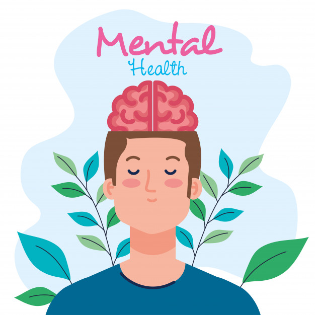
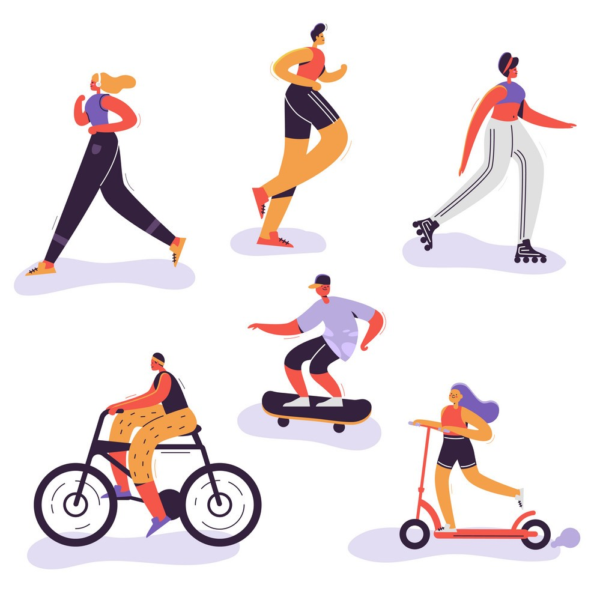
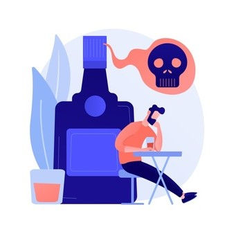
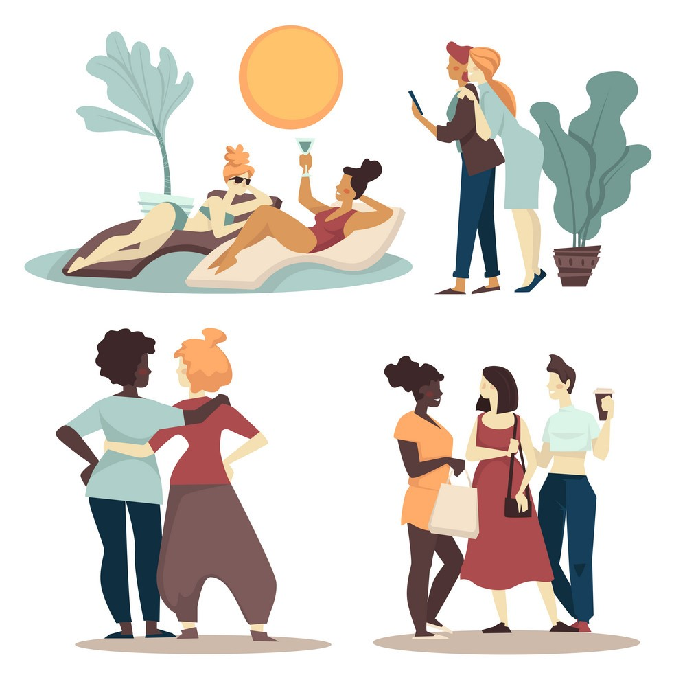
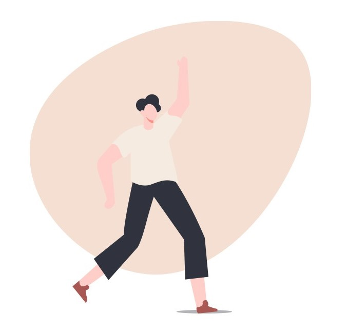
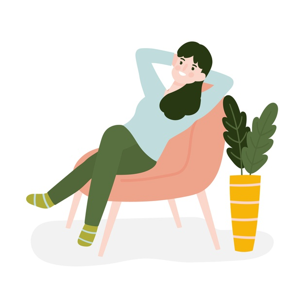
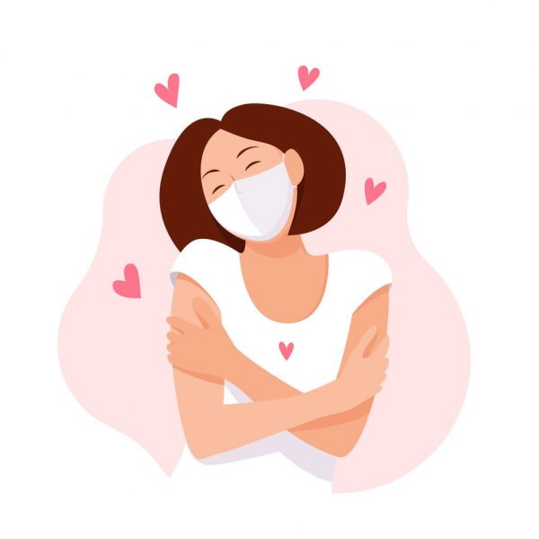

Ways to have a Healthy Mind

Healthy Mind
A healthy mind will help you find your way through life, from birth through childhood, through teenage years, adulthood and into older age. Some well recognised steps to take in developing and keeping a healthy mind include:

Being Active
Exercising makes you feel good and can help your mental health. It will also help you sleep better, and get the rest you need.

Lower Your Alcohol Intake
Over use of alcohol can increase feelings of depression. Try not to dwell on past mistakes or negative things that have happened to you. Learn from the experience and be willing to move on. Be with people you enjoy being with and who make you happy.

Connecting With Friends and Family
Keep communicating and interacting, and tell those you trust how you are feeling if you’re going through tough times. Talking to others and seeking help early can be very helpful in reducing depression, anxiety and distress.
Keep Learning
To keep your mind both healthy and active, learn a new sport, language, learn to play an instrument, read books and take an active interest in feeding your brain with positive information.
Some well-known risk factors that can impact on the way we think and see the world around us include:
- the overuse of alcohol and drugs,
- physical inactivity
- poor sleep or lack of sleep
- experiencing distress over a long period
- being in a violent environment
- poverty
- poor food and nutrition
- being bullied
- being isolated and excluded.

Positive Attitude can Lead to a Greater Sense of Wellbeing
Having a positive attitude can be helpful especially when we are going through tough times. If we can develop a positive outlook on the way we see and do things it can lead to a greater sense of wellbeing.

Take a break
Having a break or pauses from what you are doing can help you maintain focus and calmness. You can spend your time on doing your hobbies, hanging out with friends, or try relaxing like doing yoga and meditation.

Take care of yourself
Taking care of yourself can also improve your mental health. Eating nutritious food, drinking plenty of water, avoiding alcohol, and doing an exercise can also help your mind to stay healthy.